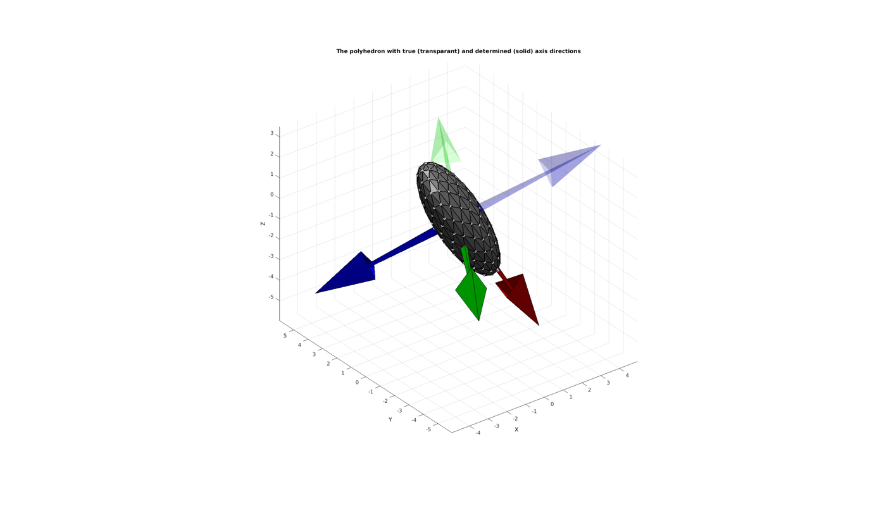

HELP_pointSetPrincipalDir
Below is a demonstration of the features of the pointSetPrincipalDir function
Contents
clear; close all; clc;
Plot settings
figColor='w'; figColorDef='white'; fontSize=11;
Using pointSetPrincipalDir to determine main directions of a polyhedron
Simulating an ellipsoid with known directions
% Ellipsoid axis stretch factors ellipStretchTrue=[pi 2 1] % Create ellipsoid patch data [F,V,~]=geoSphere(2,1); V=V.*ellipStretchTrue(ones(size(V,1),1),:); %Create Euler angles to set directions E=[0.25*pi 0.25*pi -0.25*pi]; [R_true,~]=euler2DCM(E); %The true directions for X, Y and Z axis V=(R_true*V')'; %Rotate polyhedron
ellipStretchTrue =
3.1416 2.0000 1.0000
This is the true axis system
R_true
R_true =
0.5000 0.5000 0.7071
-0.1464 0.8536 -0.5000
-0.8536 0.1464 0.5000
Determine principal directions of the point set (in this case an ellipsoidal polyhedron).
[R_fit]=pointSetPrincipalDir(V)
R_fit =
0.5000 -0.5000 -0.7071
-0.1464 -0.8536 0.5000
-0.8536 -0.1464 -0.5000
Visualizing results
MU=mean(V,1); %Origin for vectors a=[7 7]; %Vector size [Fq,Vq,Cq]=quiver3Dpatch(MU(1)*ones(1,3),MU(2)*ones(1,3),MU(3)*ones(1,3),R_fit(1,:),R_fit(2,:),R_fit(3,:),eye(3,3),a); %Fitted vectors [Fq2,Vq2,Cq2]=quiver3Dpatch(MU(1)*ones(1,3),MU(2)*ones(1,3),MU(3)*ones(1,3),R_true(1,:),R_true(2,:),R_true(3,:),eye(3,3),a); %True vectors figuremax(figColor,figColorDef); title('The polyhedron with true (transparant) and determined (solid) axis directions','FontSize',fontSize); xlabel('X','FontSize',fontSize); ylabel('Y','FontSize',fontSize); zlabel('Z','FontSize',fontSize); hold on; hp=patch('Faces',F,'Vertices',V); %The polyhedron set(hp,'FaceColor',0.5*ones(1,3),'FaceAlpha',1,'EdgeColor','k','LineWidth',1.5,'Marker','.','MarkerSize',15,'MarkerEdgeColor',0.75*ones(1,3)); patch('Faces',Fq,'Vertices',Vq,'FaceColor','flat','FaceVertexCData',Cq,'FaceAlpha',1); patch('Faces',Fq2,'Vertices',Vq2,'FaceColor','flat','FaceVertexCData',Cq2,'FaceAlpha',0.2,'EdgeColor','none'); camlight('headlight'); axis equal; view(3); axis vis3d; axis tight; grid on; set(gca,'FontSize',fontSize); drawnow;
What is clear from the above is that a different system is obtained. This is due to the symmetry properties of the ellipsoid. However all vectors are colinear with the true vector directions. The output direction matrix is ordered in size (as per the singular value decomposition). The vectors turned out colinear with R_true due to the fact that the ellipsoid directions were biased in a similar sense. However if the order is altered the first, second and third axes no longer allign with what was viewed here as the true directions. However the singular values can also be requested as an output allowing the user to reorder the output direction matrix if desired.
[R_fit,S]=pointSetPrincipalDir(V); S
S =
23.0859 0 0
0 14.6969 0
0 0 7.3485

GIBBON www.gibboncode.org
Kevin Mattheus Moerman, gibbon.toolbox@gmail.com